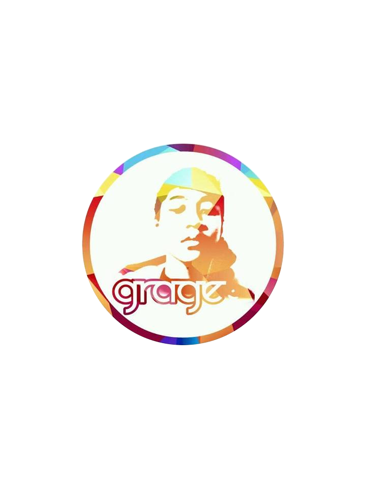

Biodata
Nama : Muhammad Grage Aurell Sanu
TTL : Bekasi, 17 September 2002
Status : Pelajar
Sekolah : SMK - SMAK Bogor
Jenis Kelamin : Laki - laki
Agama : Islam

yang diatas itu fotoku dan idola ku
Deskripsi
Kenalin nama saya Muhammad Grage Aurell Sanu , biasa dipanggil grage. Saya sekarang sekolah di SMK-SMAK Bogor . apa itu smakbo ? smakbo itu sekolah kejuruan yang khusus untuk analis kimia. Saya ini anak ke 2 dari 4 bersaudara . kakak saya perempuan namanya Ines Ionia Sanu dan adek saya dua duanya perempuan namanya Keyla Aisyah Tsaqova Sanu dan Shezan Filardhsanu. Saya suka sekali dengan sepak bola maka dari itu hobi saya bermian futsal / sepak bola saya juga suka main game , game yang satu satunya saya mainkan yaitu PES (Pro Evolution Soccer). Pemain bola yang saya idolakan yaitu Cristiano Ronaldo, bukan karena ahli dalam mengolah si kulit bundar tetapi dia juga mempunyai jiwa kemanusiaan yang tinggi , itu yang membuat saya mengidolakan dia.
Riwayat Pendidikan saya yaitu SD saya di SDN Wanasari 10 dan SMPN 7 Tambun Selatan. Saat ini saya tinggal dibogor tepatnya di Baranangsiang. Saya tinggal di kosan di daerah ciheuleut. Letak kosan saya tidak jauh dari sekolah, Jadi saya biasanya datang kesekolah lebih pagi dari teman - teman saya. Saya masuk sekolah ini karena ini adalah cita - cita saya , selain membahagiakan orang tua saya ingin jadi seorang analis kimia sejati yang bisa berkontribusi untuk negara. YAPP itu deskripsi singkat tentang diri saya sekian dan terimakasih :)
Foto - Foto tentang saya

created by grage